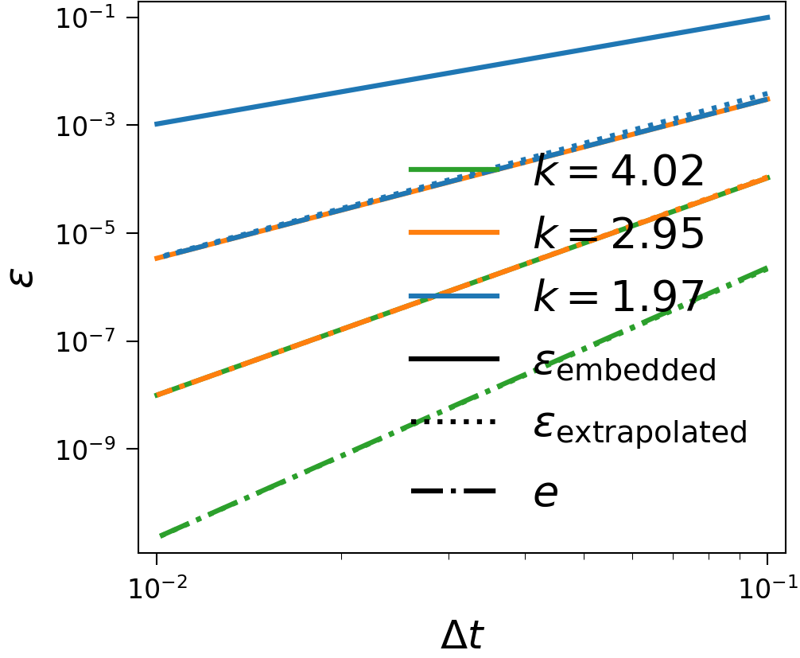
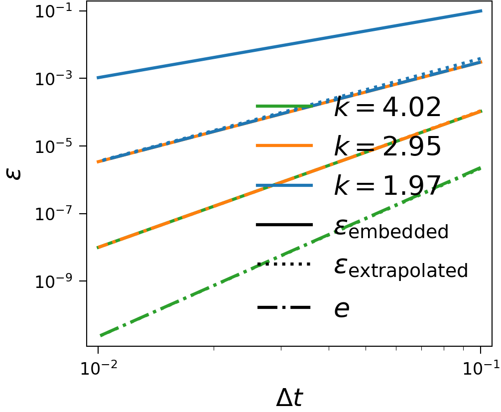

Error Estimation in SDC¶
In this project, we explore different ways of estimating the local error between two time steps of spectral deferred corrections (SDC) during runtime and what to do with them. Our first application is adaptivity, which is a scheme for dynamically selecting the time step size to provide some (de-)refinement in the temporal resolution with minimal user input or overhead. A nice side effect is that adaptivity comes with significant resilience against soft-faults, which is also true for the Hot Rod detector, which is our second major application of the error estimates and exclusively aimed at resilience.
Adaptivity¶
Adaptivity is based on knowing the order of the time-marching scheme and that the ratio of the errors of two consecutive time steps is equal to the ratio of the associated step sizes to the power of the order of the time-marching scheme plus one. Of course, we already know that is only really the case for simple problems with unchanging time scale such as advection, but as soon as the time scale changes, this relation is no better than a rough approximation. One relationship that is true for complicated problems as well, however, is that the ratio of the error of the same step is equal to the ratio of the step sizes used to compute a solution to the power of the order of time-marching plus one. This means, if we failed to compute a suitable step because our initial claim is not satisfied, we just recompute and compare the step with itself. What this boils down to is that adaptivity is most efficient in providing an optimal temporal resolution when solving equations of unchanging time scales, but it still works when the time scale is changing and in both cases might be preferable to giving a fixed step size. While fringe cases such as discrete events remain to be explored in the context of adaptivity, for integrating most ordinary differential equations, adaptivity is a way of replacing the time step size with a local tolerance and of providing dynamic resolution in the time direction. Adaptivity based on estimating the local error and the good news is that with SDC it is very simple to do an embedded error estimate.
An interesting side effect of adaptivity is that the restarting of steps that do not reach a specified accuracy in the error estimate, gives some resilience against soft faults. By soft fault we here refer to a random bit flip in memory due to the environment. Flipping a significant bit will show up in the error estimate and trigger a restart of the step. While we found that there are certain intermediately significant bits that, when flipped, do not trigger a restart, but do show up in the final solution, adaptivity generally appears to increase resilience considerably, while actually reducing overhead due to the adaptive temporal resolution capabilities.
Embedded Error Estimate¶
The idea behind the embedded error estimate is that when comparing two solutions of the same step with different order, pretending the higher order solution is the exact solution gets a good estimate of the local error of the lower order method. Since with SDC the order rises by one with each sweep, it suffices to take the norm of the difference between the solutions of two consecutive sweeps. This introduces virtually no overhead in both computation as well as memory or even implementational effort. This can also be done in Runge-Kutta methods, which is proven by the popularity of RK5(4), an embedded method where stages are used for both RK4 and RK5, such that also little overhead is introduced by computing a lower order method alongside the actual method.
A minor annoyance is, of cource, that you compute the error of the lower order method, but it is usually prefereble to take the higher order solution as the solution of the step and as initial conditions of the next step, creating an unfortunate mismatch. For adaptivity, this is not an issue, the user just needs to take care than the actual accuracy will be higher than the one that is controlling the step size.
Hot Rod¶
Hot Rod is a method to detect soft faults with high accuracy. The way it works is by computing two estimates of the local error of the same step and subtracting them to get a quantity that is rather small. This way, faults that are smaller than the error estimates can be detected by comparing to a tolerance. For the first estimate, we take the simple embedded estimate, but the second one, which we call extrapolation estimate, is a bit more complicated. It is noteworthy, that the extrapolation estimate returns the local error of the last sweep while the embedded error only gives the one of the second to last sweep and to match the two, it is nessecary to advance in time with the second to last sweep. This leads to significant computational overhead on top of the already high memory overhead introduced by the extrapolation estimate. While Hot Rod comes with the best resilience capabilities that we have seen yet, it is also very expensive, such that adaptivity seams like a better choice for most cases.
Extrapolation Error Estimate¶
The idea is from Butcher and Johnston and is very similar to the finite difference spatial discretization idea. Finite differences work by taking neighbouring values in space, doing Taylor expansions around the point of interest to the neighbouring points and this way finding coefficients, which are called stencil. Afterwards, the solutions at the points are summed and weighted with the stencil such that only a specific derivative in space at the point of interest remains.
An extrapolated value of the solution of the time step can be computed by applying this finite difference idea with a backwards stencil to the time direction and solving for the zero-derivative, which is the solution itself. Of course, this requires to keep the solutions of previous steps in memory and a start-up phase when no previous values are available and the error cannot be estimated. The start-up phase can be halved by not only storing the solutions, but also the first time-derivatives, which are known from right-hand-side evaluations. The memory overhead depends on the order of time-marching, since the order of the Taylor expansion should be higher, to avoid dominating the error. Doing k sweeps gives a order of the error of k+1 and hence k+2 instances of solutions or right-hand-side evaluations of previous steps need to remain in memory, which can be quite signifiant. The coefficients of the finite-difference stencil depend on the step sizes and hence need to be recomputed in each time step when adaptivity is used. This involves inverting a dense k+2 x k+2 matrix, which is not very significant computational overhead, particularly if it is required only once when the step size is fixed.
The extrapolated solution to the current time step is then compared to the solution that the time-marching scheme provides and their difference is a multiple of the local error plus whatever errors are below the accuracy of time-marching and extrapolation. The prefactor between the difference and the local error can be computed for fixed step sizes by assuming the first value entering in the extrapolation is exact, the second one carries one times the local error, the third one accumulates two times the local error and so on, which also relies on assuming the time scale of the problem to be constant accross all entering steps. When using adaptivity, the prefactor is computed by multiplying ratios of the step sizes taken to the power of the time-marching scheme plus one to the previously discussed integers. However, how to compute the prefactor for PinT methods remains an open question.
Tests¶
The Piline equation models an electrical start-up process and is a system of ordinary differential equations, that shows some slowing down of the time scale and is hence a good test to check adaptivity with. See below for, in the order of mention, plots of the solution, the error estimates with difference for Hot Rod and time step with adaptivity enabled and the same with fixed time step and the order of the error estimates with different numbers of sweeps. The last plot was made without Hot Rod, meaning the last sweep is taken to be the solution of the time step, making it one order higher than the embedded estimate, and it can be seen that the extrapolation error estimate lies on top of the embedded error estimate with one fewer sweep.


 

{kind=link}